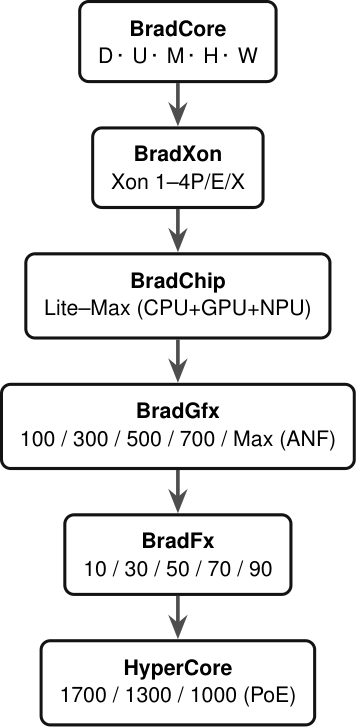

Big tech tells you a product is "real" the moment a slide is rendered. Here, every device carries one of three receipts you can verify today:

The whole brand tree — 6 brands, one fabric. open the 16-page spec ↓
The BradVector ISA means a program written once decodes identically on every processor in the line — from integrated to flagship to datacenter. No GPU has to "wait for the CPU world."
BradChip fuses CPU, GPU and NPU on one package with a unified memory pool. BradXon is the flagship processor — its Adaptive Neural Fabric adapts the machine to the workload: compute partitions, a reconfigurable dataflow NPU, and a fabric governor that steers power, clock, and bandwidth. It reallocates budget, not silicon.
Every GPU is a Torox die running the same BradVector engine. Your kernel does not care whether it is the integrated BFT, the dedicated BGT, or the datacenter BAT — the ISA is identical.
Integrated GPU. The whole ecosystem's entry graphics — no discrete card needed for the OS to shine.
Dedicated GPU. For workstations and gamers who want the fabric at full tilt — still one driver, one ISA.
Datacenter acceleration. The same BradVector ISA as your phone GPU, at rack scale — kernels port with zero changes.
One unified memory pool. The GPU reads and writes the same fabric the CPU does — zero-copy, no guest in someone else's PCIe lane.
| Tier | Serves |
|---|---|
| BradRAM L4 | On-die SRAM — AI weights, hot data |
| SPMP | Unified DRAM — everything |
| Infinity Buffer | GPU SRAM — render cache |
| BradSec RAM | Encrypted-at-rest memory regions |
BradNet is the unified fabric that connects processor, GPU, memory and storage as one coherent machine — not a zoo of cables and drivers that refuse to talk to each other.
BradOS runs across the whole line. And the shipping software platform — the BradVector toolchain — executes today, in your browser, below. That is what "software before silicon" looks like as a receipt, not a slogan.
First visit? This is the whole vocabulary, one row each. Every name carries the same honest footer badge — nothing here is a slide. Names you met in Parts 01–05, now standing next to each other so they read as parts, not noise.
| Name | Is what sits in | Receipt | Go verify → |
|---|---|---|---|
| BradChip | the CPU die — P/E cores + NPU | DESIGNED | die map |
| BradXon | flagship — ANF partitions, reconfigurable NPU, governor | GEN 1 · DESIGNED | one fabric, one flagship |
| BradVector / BVRT | the GPU's ISA + the runtime that executes it | SHIPPED | runs in this tab |
| Torox | one die, three jobs — BFT / BGT / BAT | DESIGNED | Torox GPU family |
| BGT100 | die: BradVector GPU, integrated | DESIGNED | PART 02 |
| BFT100 | die: dedicated BradFx | DESIGNED | PART 02 |
| BAT100 | die: BradApex, datacenter | DESIGNED | PART 02 |
| SPMP | the unified DRAM pool | DESIGNED | PART 03 |
| BradRAM | on-die L4 SRAM on the fabric | DESIGNED | PART 03 |
| BradNet / BradFusion | the fabric die — die-to-die + chip-link | DESIGNED | PART 04 |
| BradOS | runs across every tier, Mobile → Compute | VISION | OS section |
| BradVector die: BGT/BFT/BAT | the GPU silicon — recompute that IS the fabric | DESIGNED | Torox table |
| Kinetic Unified Driver | one driver that rules CPU/GPU/NPU | SHIPPED | receipt |
SHIPPED = software that ships today · DESIGNED = silicon with a receipt wherever it's claimed · VISION = honest, not yet real
See how every product here plugs into the same fabric.
The whole ecosystem →